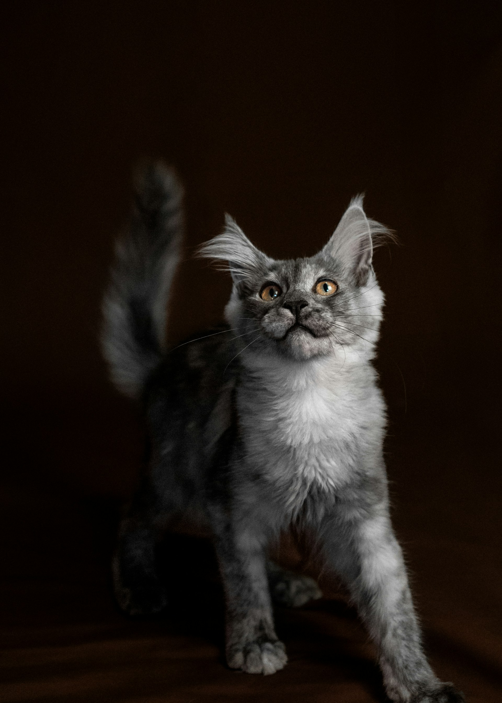
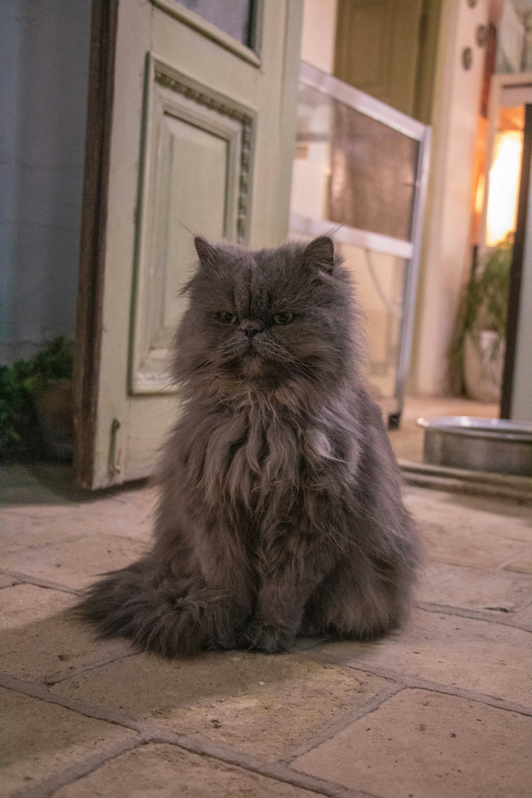

Breed Highlights
Different breeds fit different lifestyles—size, grooming needs, energy, and personality all matter. Here are a few notable favorites and why people love them.
Maine Coon
The Maine Coon stands out because it’s one of the largest domesticated cat breeds in the world, yet it’s known for being especially gentle and friendly. Often nicknamed the “gentle giant,” the Maine Coon is famous for its impressive size paired with a calm temperament. Many owners describe them as “dog-like” because they’re loyal, playful, and people-oriented.
Persian
Persian cats are one of the most recognized cat breeds. They’re known for long coats, big eyes, and flat faces. They usually prefer quiet homes and need regular grooming. Because they can be prone to health issues, it helps to research their needs before adopting.
Other Notable Breeds
- Siamese
- Bengal
- Sphynx
- Ragdoll
Different breeds fit different lifestyles—think energy level, grooming needs, and how social they are.